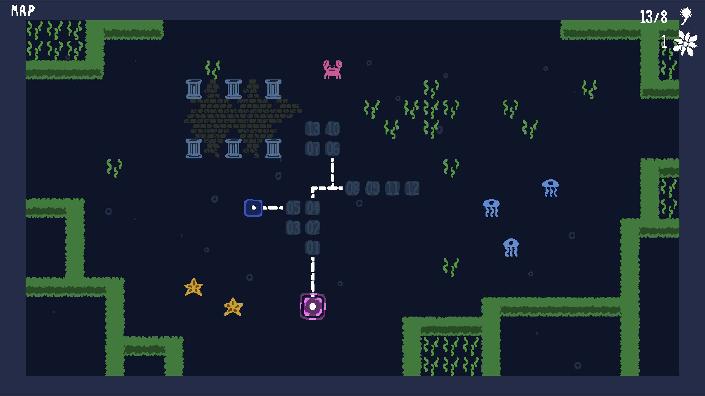
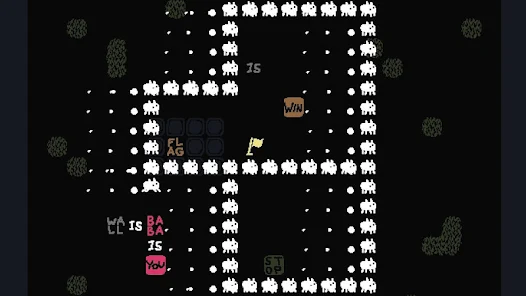
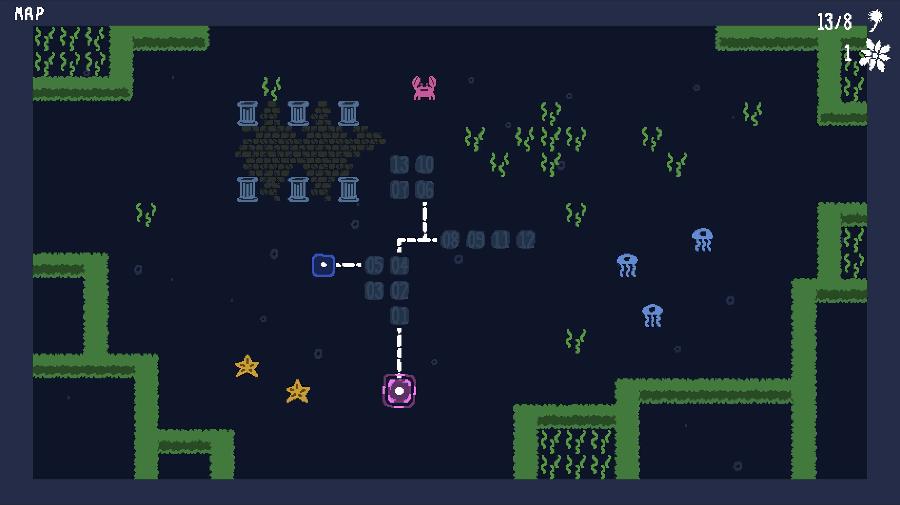
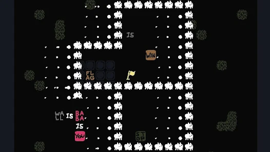

게임 소개
단어를 조합해 퍼즐을 푸는 게임입니다.
게임 제목과 같이 사진에 보이는 하얀색 동물인 바바를 조종하여
단어들을 밀어서 위치를 바꾸고 문장을 만듦으로써 방금전까지
길을 막고 있던 벽을 통과 할 수 있게 만들고 아무것도 못하던
열쇠에게 잠겨있는것을 열 수 있는 성질을 부여하는등 다양한
물체들의 성질을 바꿔 어떤 방식이든지 간에 상관없이 무조건
승리하는것 목표입니다.
게임 제목과 같이 사진에 보이는 하얀색 동물인 바바를 조종하여
단어들을 밀어서 위치를 바꾸고 문장을 만듦으로써 방금전까지
길을 막고 있던 벽을 통과 할 수 있게 만들고 아무것도 못하던
열쇠에게 잠겨있는것을 열 수 있는 성질을 부여하는등 다양한
물체들의 성질을 바꿔 어떤 방식이든지 간에 상관없이 무조건
승리하는것 목표입니다.
개인적인 소감 및 평가
처음에 기본적인 영어만 알고 있어도 본능적으로 알 수 있는
쉬운 퍼즐로부터 시작하여 특정한 단어의 활용법과 성질을 최대한
활용하여 온갖 기상천외한 방법으로 퍼즐을 풀어가는 정말로
잘 설계 되었고 도대체 어떻게 이런식으로 만들 생각을 했는지
떠오르는 게임입니다, 진짜 정말로 사소한 단점 하나로 가끔 퍼즐을
푸는 입장에서 풀이법을 자연스럽게 떠올리기가 힘들어 아무렇게나
실험해보다 우연히 풀이법을 발견하는 부분이 있습니다.
쉬운 퍼즐로부터 시작하여 특정한 단어의 활용법과 성질을 최대한
활용하여 온갖 기상천외한 방법으로 퍼즐을 풀어가는 정말로
잘 설계 되었고 도대체 어떻게 이런식으로 만들 생각을 했는지
떠오르는 게임입니다, 진짜 정말로 사소한 단점 하나로 가끔 퍼즐을
푸는 입장에서 풀이법을 자연스럽게 떠올리기가 힘들어 아무렇게나
실험해보다 우연히 풀이법을 발견하는 부분이 있습니다.
 


